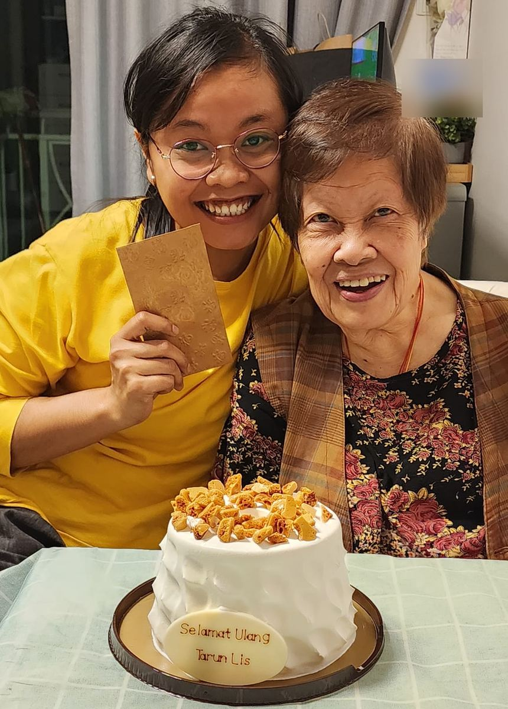
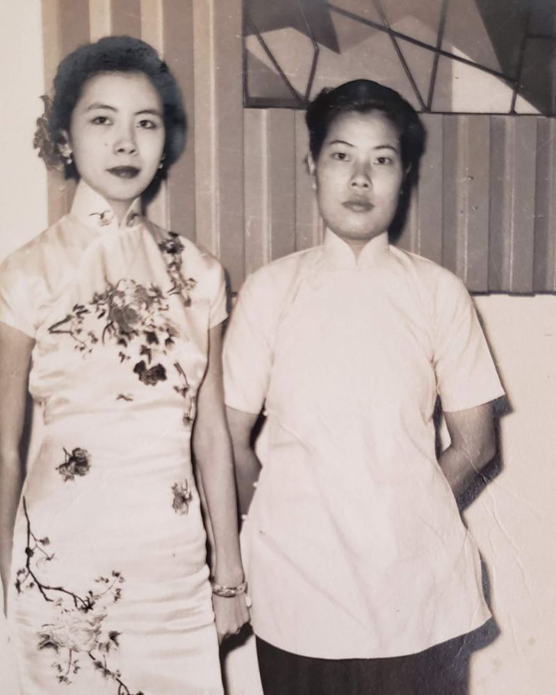
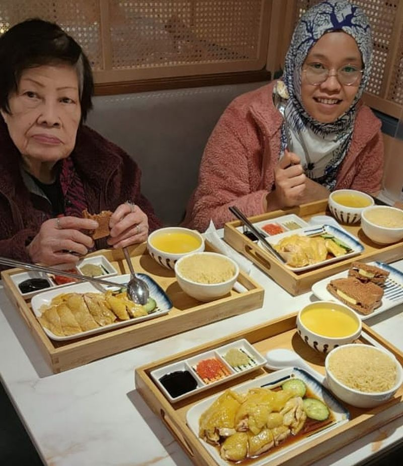
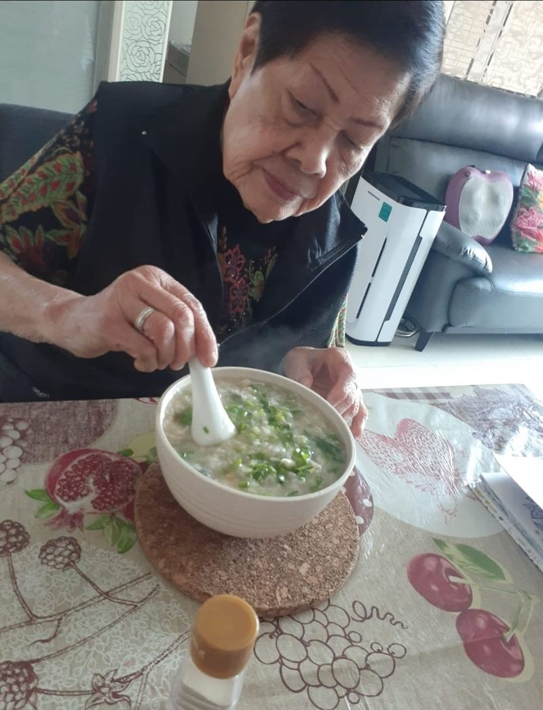
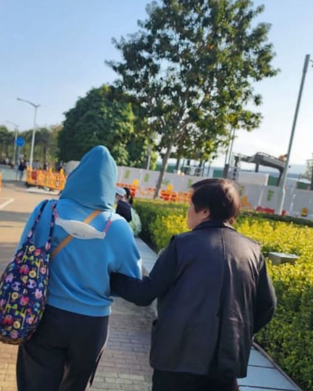
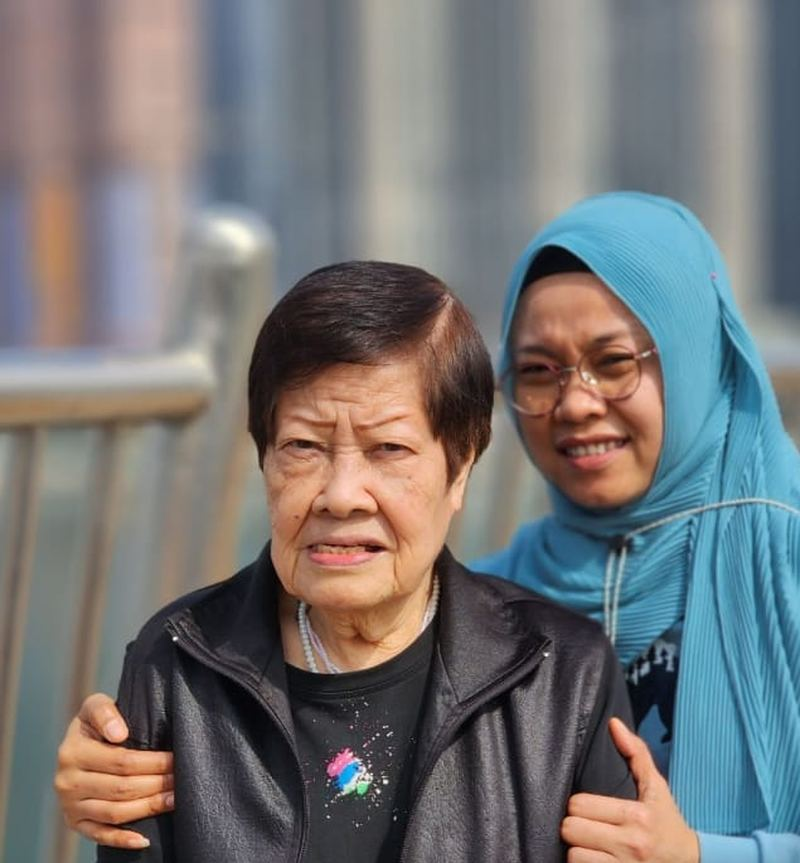

Pendamping lansia tinggal bersama · Hong Kong
Lis akan pulang.
Popo butuh teman baru.
Lis sudah enam tahun tinggal bersama dan merawat ibu kami, yang biasa dipanggil Popo. Sekarang Lis akan pulang untuk menikah. Inilah ceritanya tentang bekerja dan tinggal di sini, dengan kata-katanya sendiri.
Kami mencari seseorang yang sudah berpengalaman merawat orang dengan demensia dan bisa mengobrol sehari-hari dalam bahasa Kanton sejak mulai bekerja.
Baca sambil menggulir, atau dengarkan ceritanya.

saya kerja dengan anda sudah 6 tahun dan saya sangat senang bekerja di sini tetapi saya harus pulang untuk menikah.popo sudah saya anggap sebagai nenek saya sendiri dan saya sangat sayang dengan popo.popo itu baik dan perhatian dengan saya, saya pun juga sering bercanda dengan popo.tuan dan nyonya sudah sangat baik dengan saya dan keluarga saya, sebenarnya berat untuk meninggalkan popo.jika saya pulang nanti pasti saya akan meridukan popo.saya juga berharap semoga pengganti saya nanti orangnya baik kepada popo dan sabar merawat popo
Cerita Lis adalah pengalamannya sendiri, bukan janji bahwa setiap hari akan mudah. Anda akan mengenal Popo dengan cara Anda sendiri. Sebelum Anda memutuskan, mari kenali Popo serta pekerjaan dan kehidupan sehari-hari di sini.
Bacaan memakai suara yang tersedia di ponsel atau perangkat Anda untuk bahasa halaman yang dipilih. Suara untuk bahasa tersebut belum tentu tersedia di perangkat Anda.
01 · Kenali Popo
Popo juga pernah merantau untuk bekerja.
Kenali orangnya dulu, bukan hanya kebutuhan perawatannya.

Popo tahu rasanya bekerja keras.
Popo dulu merantau untuk bekerja sebagai pekerja rumah tangga di Hong Kong, lalu menikah dan membesarkan keluarga. Keluarga Shanghai tempatnya bekerja sangat teliti, sehingga Popo terbiasa dengan standar pekerjaan rumah yang tinggi dan masih memperhatikan cara pekerjaan dilakukan. Ia senang bercerita tentang masa mudanya dan bangga melakukan hal-hal sendiri.
Ingatannya berubah. Hidupnya tetap berarti.
Popo hidup dengan demensia, penyakit yang memengaruhi ingatan, cara berpikir dan kegiatan sehari-hari, bukan sekadar lupa biasa karena usia. Kami mencari seseorang yang berpengalaman merawat orang dengan demensia, mau mengenal kesukaan Popo dan mendampinginya dengan sabar.
02 · Makan dan menemani
Makan bersama, ngobrol dan menemani Popo.
Menemani Popo adalah bagian dari pekerjaan, bukan menunggu sampai pekerjaan rumah selesai.


Ada teman untuk ngobrol dan berkegiatan.
Saat Popo di rumah, Anda makan bersama dan mengobrol dalam bahasa Kanton, jadi kemampuan percakapan sehari-hari diperlukan sejak awal. Mendengarkan lagu kesukaan, menonton acara TV, menggambar dan membuat kerajinan bersama adalah bagian dari kesehariannya. Begitu juga membaca judul berita di koran atau menu bersama.
Makanan yang Popo suka.
Lis sering membuat bubur pagi kesukaan Popo: bubur nasi dengan ikan cincang, banyak jahe dan selada, serta merica putih yang banyak sekali; Popo juga suka agar-agar pandan dengan santan. Siapkan makanan segar, lembut, tidak pedas, dengan sedikit garam, minyak dan gula. Pelajari masakan Kanton yang biasa Popo makan dan buat sup Cina dua sampai tiga kali seminggu.
Memasak daging babi termasuk tugasnya.
Membeli, menangani dan memasak daging babi untuk Popo termasuk dalam pekerjaan ini. Jika tugas ini tidak sesuai bagi Anda, beri tahu agensi sebelum pertemuan.
03 · Perawatan sehari-hari
Popo tetap mandiri. Anda tetap dekat.
Bantu sesuai kebutuhan agar Popo aman, sambil menghargai yang masih bisa dilakukannya sendiri.

Tetap dekat, bantu sesuai kebutuhan.
Popo masih berjalan sendiri, tetapi langkahnya kurang stabil, jadi tetap dekat, perhatikan keamanannya dan bantu bila perlu. Bantu Popo menggunakan toilet, melepas dan membersihkan gigi palsu, serta merawat kulit, kaki dan rambut; pastikan air minum tersedia. Saat Anda merawatnya, Popo tidak boleh ditinggal sendiri di rumah atau keluar sendirian.
Popo mandi sendiri.
Popo membersihkan tubuhnya sendiri; Anda tidak memandikannya. Tetap di dekat kamar mandi, cek keadaannya selama mandi dan pastikan sirkulasi udara baik.
Obat sesuai resep, bukan keputusan sendiri.
Bantu rutinitas obat Popo dan siapkan kotak obat sesuai jadwal yang diresepkan. Ikuti panduan tertulis yang diperiksa dokter atau apoteker serta pelatihan yang diberikan. Jangan mengubah dosis atau memutuskan pemberian obat tambahan sendiri.
Catatan yang keluarga perlu tahu.
Catat obat yang diberikan dan ukur serta catat tekanan darah pagi dan malam. Kirim catatan dan kabar tentang perubahan penting ke grup WhatsApp keluarga yang ditunjuk.
Rumah terurus juga bagian dari perawatan.
Belanja bahan makanan, memasak, mencuci pakaian dan membersihkan dapur, kamar mandi, lantai serta perlengkapan rumah termasuk tugas Anda; ganti dan cuci seprai serta perlengkapan tempat tidur setiap minggu. Pantau persediaan kebutuhan rumah dan gunakan gas, air serta listrik dengan aman dan tidak boros. Rutinitas kebersihan diri dan rumah dijelaskan sebelum Anda menerima pekerjaan.
Pelajari langkahnya bersama kami.
Anda menemani kami saat kunjungan dokter atau pemeriksaan. Setelah memahami prosesnya dan disepakati bersama, Anda mungkin mengantar Popo untuk pemeriksaan sederhana. Jika kelak Popo membutuhkan lebih banyak bantuan, misalnya mengganti popok atau menyuapi, kita membicarakan tugas, pelatihan dan dukungannya sebelum mengubah tanggung jawab Anda.
04 · Rutinitas dan istirahat
Ada waktu untuk Popo. Ada waktu untuk Anda.
Ada tanggung jawab pagi, sore, malam dan akhir pekan, dengan jeda siang hari kerja setelah pekerjaan rumah selesai.

Pagi mengantar, sore menyambut.
Bantu rutinitas pagi Popo dan berjalan bersamanya ke tempat menunggu mobil jemputan pusat lansia. Saat Popo pulang, jemput, siapkan makanan ringan, cek keadaannya dari dekat kamar mandi saat ia mandi, makan malam bersama dan bantu persiapan tidur.
Jeda saat Popo di pusat kegiatan.
Biasanya Popo mengikuti kegiatan di pusat kegiatan lansia pada siang hari Senin sampai Jumat dan makan siang di sana. Setelah belanja, mencuci dan pekerjaan rumah selesai, Anda bisa beristirahat, menelepon keluarga atau keluar menikmati waktu istirahat.
Akhir pekan punya ritme berbeda.
Saat Anda merawat Popo pada akhir pekan atau hari libur, Anda makan, berkegiatan dan pergi ke mal atau taman bersamanya, sesuai kondisi Popo dan kebutuhan istirahatnya. Ia suka menikmati es krim setelah jalan-jalan.
Tidur Anda juga penting.
Jika kebetulan sudah terjaga pada malam hari dan melihat Popo perlu ke toilet, bantuan Anda mengantarnya dengan lembut kami hargai. Anda tidak diharapkan berjaga sepanjang malam, memasang alarm atau berulang kali bangun untuk mengeceknya. Jika Popo sering terbangun hingga mengganggu istirahat Anda atau membutuhkan lebih banyak bantuan, beri tahu kami agar dukungan dan pengaturan istirahat ditinjau bersama.
05 · Tinggal di sini
Kamar sendiri. Kehidupan pribadi tetap ada.
Merawat Popo bukan berarti melepaskan hubungan dengan orang terdekat, keyakinan atau minat Anda.
Tinggal bersama Popo.
Anda tinggal bersama Popo dan punya kamar sendiri. Wi-Fi gratis, makanan dan minuman disediakan; keluarga menanggung biaya perjalanan untuk pekerjaan. Anggota keluarga lain tinggal dekat, bukan di apartemen ini.
Bicarakan privasi dengan jelas.
Popo kadang masuk ke kamar Anda untuk mencari barang; kita perlu membicarakan cara menjaga privasi Anda bersama. Teman tidak boleh berkunjung ke apartemen.
Keyakinan dan pilihan makanan dihormati.
Anda boleh memasak makanan yang disukai, termasuk masakan Indonesia yang disesuaikan untuk Popo jika ingin menyajikannya. Kami menghormati agama dan kebutuhan ibadah Anda. Jika berpuasa, kita merencanakan waktu makan, ibadah dan istirahat bersama.
di sini saya bekerja sangat nyaman, tuan mengizinkan saya sholat dan berpuasa, mengizinkan saya memakai kerudung di saat keluar rumah bahkan dengan keluarga saya di Indonesia anda sangat perhatian.
06 · Dukungan keluarga
Ada hari yang sulit. Kita hadapi bersama.
Kesabaran Anda perlu disertai keterlibatan dan dukungan kami.
Kebingungan terasa nyata bagi Popo.
Popo bisa mengulang pertanyaan, lupa sudah makan, mencari suami atau rumah lamanya, mencurigai ada barang hilang, menolak bantuan atau ingin keluar. Menjelang malam, saat hujan atau cuaca mendung, Popo bisa lebih gelisah, dan kadang ucapannya menyakitkan. Memahami demensia bukan berarti Anda harus memendam perasaan saat kesulitan.
Beri tahu saat Anda membutuhkan kami.
Kami mengajarkan rutinitas Popo, memberi panduan dan mengenalkan kontak keluarga utama serta cadangan; Lis membantu serah terima jika tersedia. Anda belajar kapan perlu bantuan keluarga dan kapan bantuan darurat diperlukan. Beri tahu jika khawatir, lelah atau merasa terluka agar kita mencari dukungan yang dibutuhkan bersama.
ketika popo sedang bad mood dan saya tidak bisa mengatasi anda selalu membantu saya untuk membujuk popo dan menghibur popo supaya popo happy kembali, anda sangat membatu sekali buat saya ketika saya kesulitan mengatasi popo.
ketika saya sakit, anda dan nyonya sangat cepat untuk membatu saya untuk periksa ke dokter dan mengizinkan saya untuk istirahat dan selalu mengingatkan saya untuk minum obat dan selalu menanyakan kabar saya.
07 · Sebelum memutuskan
Sebelum Anda menerima, kami juga ingin mendengar.
Agensi atau orang yang membagikan halaman ini bisa mengatur pertemuan. Kami ingin mendengar pertanyaan Anda, bukan hanya pengalaman Anda.
Istirahat dan pilihan kerja dibicarakan dulu.
Hari istirahat, hari libur, siapa yang mendampingi Popo saat Anda libur dan ketentuan kontrak dijelaskan serta dibicarakan sebelum Anda menerima pekerjaan. Bekerja pada hari Minggu dengan bayaran tambahan hanya jika Anda memilihnya dan disepakati bersama.
Langkah berikutnya: saling mengenal.
Jika ingin bertemu untuk membicarakan pekerjaan ini, hubungi agensi atau orang yang membagikan halaman ini agar mereka mengatur pertemuan. Bawa pertanyaan Anda dan ceritakan pengalaman perawatan, kemampuan bahasa Kanton serta hal-hal yang perlu dipelajari atau dibicarakan. Kami membantu Anda mempelajari ungkapan yang biasa dipakai bersama Popo dan ingin mendengar kebutuhan Anda agar bisa bekerja dan tinggal dengan nyaman.
saya kerja di sini sangat di hargai dan sudah di anggap sebagai keluarga bukan sebagai perawat rumah tangga, itulah yang membuat saya tetap bertahan dan merasa nyaman sampai 6 tahun ini dan sebenarnya saya sangat berat untuk meninggalkan popo tapi saya harus pulang untuk menikah.
berkerja bersama anda adalah keberuntungan bagi saya.saya bahagia selama bekerja dengan anda.terimakasih atas segala kebaikan keluarga anda terhadap saya selama ini.sukses , sehat selalu dan Tuhan memberkati kalian semua.
Minta agensi atau orang yang menunjukkan halaman ini kepada Anda untuk mengatur pertemuan.
Hubungi agensi atau orang yang membagikan halaman ini jika Anda ingin bertemu untuk membicarakan pekerjaan ini.